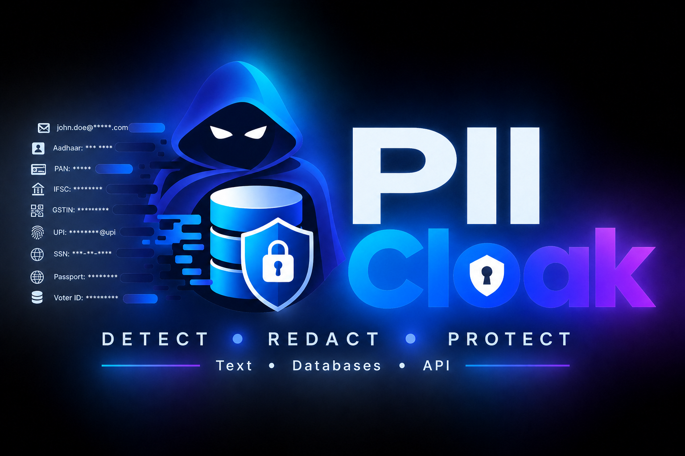
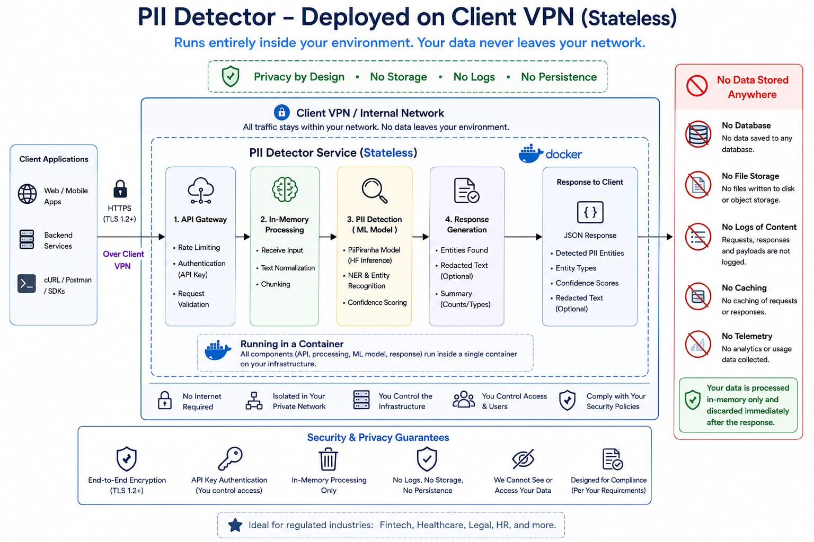

Text Detection & Redaction API
Send strings from application and data sources to receive detected entities, confidence scores, and redacted text for downstream use.
Submit text from logs, code repositories, documents, and backups through the REST API, or scan PostgreSQL and Oracle databases to locate PII and generate actionable JSON and HTML reports.

PII Cloak combines deterministic regex detection for structured identifiers with a transformer-based PII model for entities that depend on language and context.
Send strings from application and data sources to receive detected entities, confidence scores, and redacted text for downstream use.
Inspect database samples to identify tables and columns likely to contain personal, identity, financial, or credential data.
Generate machine-readable JSON and review-ready HTML reports for engineering, data, architecture, and privacy teams.
Submit extracted text as strings or use the PostgreSQL and Oracle database scanners.
Use structured rules and contextual detection to classify 22 commonly encountered personal, contact, location, identity, financial, credential, and database fields.
Structured identifiers such as Aadhaar, PAN, GSTIN, IFSC, UPI, passport, voter ID, email, and SSN use regex-based detection. Contextual entities are detected with a transformer-based PII model.
Detect sensitive information in transactions, onboarding documents, customer chats, and operational exports.
Remove personal data before prompts, training samples, or conversation logs reach model providers.
Protect user-generated content, uploaded files, tickets, and application logs across product surfaces.
Detect and redact client, case, contract, and discovery data before documents move through review tools or AI workflows.
Protect employee, candidate, payroll, and benefits information across HR platforms, support requests, and internal reports.
Protect Aadhaar, PAN, voter ID, passport, tax, contact, and address data across applications, records, and citizen service workflows.
Deploy the stateless service as a single Docker container within your client VPN or internal network. Requests remain under your infrastructure, access, and security controls.

Scan representative database samples, classify likely PII exposure, and share findings in formats suited to both automation and technical review.
Scan schemas and sampled column values to identify where personal, identity, address, financial, and account data is likely stored.
Apply the same PII detection coverage to sampled Oracle data and produce table and column-level findings for remediation planning.
Add connectors for MySQL and other databases using the existing scan and reporting workflow as requirements expand.
Open-source frameworks provide building blocks. Cloud APIs provide managed endpoints. Compliance platforms provide dashboards. PII Cloak provides a working detection, redaction, and database discovery service ready to deploy.
| Decision area | Open-source frameworks | Generic cloud APIs | PII Cloak |
|---|---|---|---|
| Time to first result | Days of setup, configuration, and integration. | Hours of account, security, and SDK setup. | Minutes to pull, run, and call the API. |
| Indian identifiers | Custom recognizers and production tuning may be required. | Coverage varies by provider, service, and region. | Aadhaar, PAN, GSTIN, IFSC, UPI, voter ID, and passport coverage is built in. |
| Database scanning | Extraction, database connectors, and reports are separate engineering work. | Discovery is typically tied to the provider's own data services. | PostgreSQL and Oracle scanning with table and column findings plus JSON and HTML reports. |
| Detection approach | Your team selects, combines, and tunes rules and models. | Provider-managed detection with limited model control. | Hybrid regex and transformer detection tuned for Indian and global PII. |
| Data residency | Can stay in your infrastructure; your team owns hardening and controls. | Data is sent to a provider endpoint under its regional controls. | Runs inside your network with in-memory processing and no content storage or logs. |
| Ongoing maintenance | 5X more in total ownership cost when engineering, infrastructure, tuning, and upgrades are included. | The provider maintains detection; your team owns integrations and vendor lifecycle. | Detection rules, models, connectors, reports, and service maintenance are handled for you. |
| Production effort | Multiple team-weeks to assemble and productionize. | Multiple integration cycles across security and data services. | A pre-integrated service that most teams can deploy the same day. |
The takeaway: PII Cloak packages the detection stack, private deployment controls, database connectors, and reporting that teams otherwise assemble themselves, creating a 5-10X faster path to production.
Send raw text to the API and receive detected entities with types, scores, and matched values. Use the redacted output to protect logs, support workflows, application data, and AI inputs.